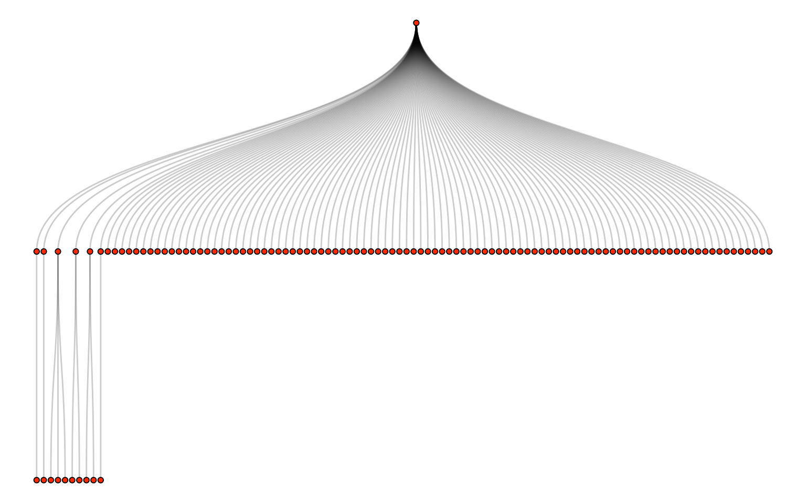

9 Web APIs
In Chapter 8, we listed numerous placed to find datasets online. The sorts of datasets discussed there are generally formatted as a .csv file—or something like it—which you can download directly to your computer and import into R using read_csv(). Lots of online data, however, are not pre-packaged in this way. When datasets are very large or complex, or are being updated regularly, the hosts of the data will instead provide a web API.
You can think of web APIs as little programming languages that are written inside a URL (URLs are the things you write in the top of your web browser to tell it which web page you want to access). When you access your custom-written URL, the host will perform whatever computations are necessary to get you your data, and send it to you in the same way that it would send you a website.
Web APIs are sometimes difficult to use because each one works differently. Learning to use a new API can be like learning a new programming language. For this reason, web APIs sometimes have associated wrappers, packages that allow you to communicate with the API in a more familiar format.
In the first part of this chapter, we introduce the vosonSML package, an R-friendly wrapper that provides easy access to the Reddit, Twitter, Mastadon, and YouTube APIs. At the end of the chapter, we will discuss web APIs that do not have a convenient wrapper in R.
9.1 API Basic Concepts
- Requests: Each time you visit a URL associated with an API, you are submitting a request for data.
- Endpoints: Every API has at least one endpoint, a contact point for particular types of requests.
- Rate Limits: Many APIs set limits on the number of requests you can make per minute (or per second). This is because processing requests costs time and money for the host. If you go beyond the rate limit, the API will return an error like “429 Too Many Requests.”
- Authentication: Some APIs are not open to the public, instead requiring users to apply for access or pay for a subscription. When accessing these APIs, you need an API key or an access token. This is your password for the API.
9.1.1 vosonSML
For accessing social media APIs with vosonSML, you only need two functions:
-
Authenticate()creates a credential object that contains any keys or access tokens needed to access a particular API. This credential object can be reused as long as your credentials don’t change. -
Collect()initiates a series of API requests and stores the results as a dataframe or list of dataframes.
vosonSML also provides tools for working with network data (i.e. the ways in which users or posts are connected to one another), but these will not be covered in this textbook.
9.2 Reddit
Reddit generated over 3 billion posts and comments in 2022. Many of these contain long-form text. And its API is free. These traits make it very useful to researchers.
Reddit content exists on three levels:
- Communities, called “subreddits” are spaces for users to post about a specific topic. Individual subreddits are referred to as “r/SUBREDDIT”. For example, r/dataisbeautiful is for data visualizations, r/NaturalLanguage is for posts about natural language processing, and r/SampleSize is a place to gather volunteer participants for surveys and polls. Communities are policed by moderators, users who can remove posts or ban other users from the community.
- Posts are posted by users to a particular subreddit. Each post has a title, which is always text, and content, which can contain text, images, and videos.
- Comments are responses to posts, responses to responses to posts, responses to responses to responses to posts, etc. These are always text.
9.2.1 The Reddit Algorithm
Reddit data are not representative samples of the global population. They are not even representative samples of Reddit users. This is partly due to the dynamics of the Reddit ranking algorithm, which gives precedent to viral content. The details of the algorithm are no longer public, but it is largely based on “upvotes” and “downvotes” from the community, and probably also incorporates the time since posting. The ranking system for comments is almost certainly different from the ranking system for posts. Reddit also has a “Karma” system, by which users who post popular content get subsequent content boosted. This creates an incentive system which is sometimes exploited by the advertising industry. The bottom line: Reddit posts are disproportionately viral. To partially counteract this when gathering Reddit data, set the API to sort by recency (sort = "new") rather than the default, “best” (Section 9.2.3).
9.2.2 Communities
To retrieve the posts from a Reddit community, call Authenticate("reddit") followed by Collect() with endpoint = "listing". To specify the particular community (or communities) in which you are interested, use the subreddits parameter. For example, the following code retrieves the 20 most recent posts from r/RedditAPIAdvocacy, a subreddit devoted to fighting restriction of the Reddit API.
APIAdvocacy_posts <-
Authenticate("reddit") |>
Collect(
endpoint = "listing",
subreddits = "RedditAPIAdvocacy",
sort = "new", # newest posts first
period = "all", # all time
max = 20, # 20 most recent posts
verbose = TRUE
)
head(APIAdvocacy_posts)
#> # A tibble: 4 × 111
#> approved_at_utc subreddit selftext author_fullname saved mod_reason_title
#> <lgl> <chr> <chr> <chr> <lgl> <lgl>
#> 1 NA RedditAPIAdvo… "" t2_8uyouiqz FALSE NA
#> 2 NA RedditAPIAdvo… "" t2_177u1k FALSE NA
#> 3 NA RedditAPIAdvo… "" t2_g0y5d FALSE NA
#> 4 NA RedditAPIAdvo… "Last w… t2_177u1k FALSE NA
#> # ℹ 105 more variables: gilded <int>, clicked <lgl>, title <chr>,
#> # link_flair_richtext <list>, subreddit_name_prefixed <chr>, hidden <lgl>,
#> # pwls <lgl>, link_flair_css_class <lgl>, downs <int>,
#> # thumbnail_height <lgl>, top_awarded_type <lgl>, hide_score <lgl>,
#> # name <chr>, quarantine <lgl>, link_flair_text_color <chr>,
#> # upvote_ratio <dbl>, author_flair_background_color <lgl>,
#> # subreddit_type <chr>, ups <int>, total_awards_received <int>, …To psychology researchers, the most interesting subreddits are often those devoted to psychological disorders, for example r/depression, r/socialanxiety, r/SuicideWatch, r/bipolarreddit, and r/opiates. Subreddits devoted to intellectual discussion, such as r/changemyview, r/IAmA, and r/ExplainLikeImFive, are also interesting subjects for research. Lastly, much research is devoted to the behavior of Redditors in political communities.
An example of using Reddit’s political communities in research: In a series of experiments, Ashokkumar & Pennebaker (2022) used the Reddit API and other sources to develop a dictionary-based measure of group identity strength. A dictionary is a list of words associated with a given psychological or other construct, for example associating “sleepy” and “down” with depression (see Chapter 14). Ashokkumar and Pennebaker had participants write small, free-form responses and fill out questionnaires on group identity strength. They then identified existing dictionaries that were associated with the questionnaire-based measures, and used these to construct a composite measure of group identity strength. When applied to text, they called this measure “unquestioning affiliation.” Among college students, they showed that unquestioning affiliation in writing could predict whether students would drop out of college one year later. Finally, they applied their method to naturalistic data retrieved from the Reddit API, from the political communities r/The_Donald and r/hillaryclinton, and showed that users’ unquestioning affiliation predicted the duration that they would stay in the community before leaving.
9.2.3 Threads
A post with all of its associated comments is called a thread. For example, Hadley Wickham, the founder of the tidyverse, ran a thread on the r/dataisbeautiful subreddit in 2015, in which he answered commenters’ questions. To retrieve that thread, first find its URL. Do this by finding the threat on Reddit and copying the link from your web browser. Then call Authenticate("reddit") and Collect(), like so:
# List of thread urls (in this case only one)
threads <- c("https://www.reddit.com/r/dataisbeautiful/comments/3mp9r7/im_hadley_wickham_chief_scientist_at_rstudio_and/")
# Retrieve the data
## Since the Reddit API is open, we don't need
## to give any passwords to Authenticate()
hadley_threads <-
Authenticate("reddit") |>
Collect(
threadUrls = threads,
sort = "new", # newest comments first
verbose = TRUE # give updates while running
)
# Peak at Hadley's responses
hadley_threads |>
filter(user == "hadley") |>
select(structure, comment) |>
head()
#> # A tibble: 6 × 2
#> structure comment
#> <chr> <chr>
#> 1 4_1 "1. Should be out early next year \n\n2. Unfortunately not. \n\n3.…
#> 2 6_1 "I'm not aware of any discussions, but I'm not that likely to be si…
#> 3 7_1 "They already do occur in most errors (or at least in the `tracebac…
#> 4 10_1 "No, but the next version features customisable keyboard short cuts…
#> 5 12_1 "I offered to help the department with the overall design of stat40…
#> 6 13_1 "ggplot worked using function composition instead of addition. So i…The resulting dataframe has many columns. The most useful are the following:
-
commentis the text of the comment itself. -
useris user who posted the comment. -
structureis the tree structure leading to the comment. For example, “137_6_2” is the 2nd comment on the 6th comment on the 137th comment on the original post. -
comm_dateis the date and time of the comment, in UTC. Since this is in character format, it needs to be converted to a datetime withlubridate::as_datetime().
By processing the structure values, we can conceptualize the thread as a tree, with the original post as the root and comments as branches:
library(ggraph)
hadley_threads |>
mutate(
level = str_count(structure, "_") + 1L,
parent = str_remove(structure, "_[[:digit:]]+$"),
parent = if_else(level == 1, "0", parent)
) |>
select(parent, structure) |>
tidygraph::as_tbl_graph() |>
ggraph(layout = 'tree', circular = FALSE) +
geom_edge_diagonal(alpha = .2, linewidth = 1) +
geom_node_point(shape = 21, fill = "orangered") +
theme_void()An example of using Reddit threads in research: Xiao & Mensah (2022) collected threads from r/changemyview, a community in which the original poster (OP) makes a claim, commenters make arguments against that claim, and the OP responds with “delta points” to indicate how much their view has been changed. Xiao & Mensah (2022) analyzed the frequency of delta points at each level of the thread tree, and found that the OP’s view tended to change most after the 2nd, 4th, 6th, 8th, and 10th levels of comments—in other words, every other level. They then analyzed the semantic similarity between comments using cosine similarity (Section 17.1.2) between simple word counts. The results suggested that every-other-level comments tend to elaborate and refine the comments immediately before them, so that the latter are perceived to be more persuasive.
9.2.4 Other Reddit Features
For most applications, vosonSML is a sufficient Reddit API wrapper. For slightly more advanced functionality like searching for subreddits with a keyword or retrieving a user’s comment history, we recommend Reddit Extractor.
9.3 Twitter / X
Twitter has been called the “model organism” of big data research (Tufekci, 2014). This is because, until 2023, Twitter was the largest source of free, open social text data. In contrast to Facebook, almost all Twitter activity is public. Twitter’s standardized character limit (originally 140, now 280), along with its simple network structure, make structuring and analyzing the data easy.
9.3.1 Followers, Mentions, and Retweets
Whereas Reddit users subscribe to communities, Twitter users subscribe to other users. This is called “following.” They can also “retweet” other users’ posts to their own feed, or explicitly mention other users in posts using the “@” symbol. This focus on connections between individuals means that each user’s communal associations can be characterized in a rich, nuanced way.
An example of using Twitter networks in research: Mosleh et al. (2021) collected Twitter IDs of participants who filled out a set of questions with intuitively compelling but incorrect answers, testing analytic thinking. They then analyzed the Twitter accounts that each participant followed, and found a large cluster of accounts followed preferentially by people with less analytic thinking. This group most prominently featured Twitter accounts of retail brands.
9.3.2 Geolocation on Twitter
Twitter allows users to specify a geographical location along their post. While these user-provided locations can sometimes be difficult to interpret, they allow analyses by geographic location.
An example of using Twitter geolocation in research: Takhteyev et al. (2012) used Twitter’s public feed to gather a sample of users. Researchers also collected the profiles of all the users followed by the users in the original sample. They then analyzed the distribution of these ties over geographical distance, national boundaries, and language differences. They found that Twitter users are most strongly tied to people in their own city, and that between regions, the number of airline flights was the best predictor of ties.
9.4 Mastodon
In some ways, you can think of Mastodon as open source Twitter. Indeed, a large portion of the Mastodon user base started using it as a replacement for Twitter after controversial events in 2022. Like Twitter users, Mastodon users post short posts to their feed, in which they can mention other users with “@” or use hashtags with “#.” Like Twitter users, Mastodon users can follow other users and be followed by them.
Despite their similarities, networks of users on Mastodon and Twitter are not the same. The biggest difference is that each Mastodon user is associated with a server (also known as an instance). Mastodon servers can have hundreds of thousands of users, or just a few. Each server runs the Mastodon source code independently and hosts all of its users’ content. Many servers have a theme based on a specific interest. It is also common for servers to be based around a particular locality, region, ethnicity, or country. For example, tech.lgbt is for LGBTQIA+ technologists, SFBA.social is for the San Francisco Bay Area in California, and fediscience.org is for active scientists.
Because of their topic-specific organization, Mastodon servers can function a bit like Reddit communities. Like Reddit communities, Mastodon servers can set their own rules for content. They can even change the default 500-character limit. The key difference is that on Reddit, posts are associated with a community, whereas on Mastodon, users are associated with a community. In other words, community affiliation on Mastodon is less related to the content of its posts and more related to the identity of its users. This feature can be useful when collecting user activity. For example, if we wanted to study the overall behavior of members of the LGBTQIA+ community, we could collect the activity of users affiliated with the tech.lgbt and other community-specific servers.
9.4.1 Servers
Mastodon server feeds are organized chronologically (unlike Reddit or Twitter, which have complex ordering algorithms). To retrieve the most recent posts on a particular server using vosonSML, we call Authenticate("mastodon") followed by Collect() with the “search” endpoint. The name of the server is identified with “instance.”
mast_science <-
Authenticate("mastodon") |>
Collect(
endpoint = "search",
instance = "fediscience.org",
local = TRUE,
numPosts = 100, # number of most recent posts
verbose = TRUE
)The global feed (i.e. across all servers) can be accessed by setting local = FALSE. You can also retrieve posts with a specific hashtag using the hashtag parameter (e.g. hashtag = "rstats").
In all cases, the call results in a list of two dataframes, “posts” and “users.” In the “posts” dataframe we have columns such as:
-
content.textis the text of the post itself. -
accountis a column of one-row dataframes containing information about the user who posted each post. You can convert this into a simple account ID column withmutate(account_id = sapply(account, function(c) pull(c,id))). -
idis a unique ID for the post. -
in_reply_to_idis the ID of the post that this post is directly responding to. This can be used to build tree structures, as we did in Section 9.2.3, but see Section 9.4.2 for an alternative way to do this. -
in_reply_to_account_idis the account ID of the poster to whom this post is directly responding. This can be used to build networks of users as opposed to networks of threads. -
created_atis the date and time of the post in UTC, already in datetime format.
The “users” dataframe has the same information as the account column of “posts”, but formatted as a single dataframe with one row per user.
9.4.2 Threads
Since Mastodon users can mark their posts as a reply to an earlier post, these posts are essentially “comments” on the original post. A chain of posts that reply to an original post is called a thread. We can collect the contents of one or more threads with endpoint = "thread", by specifying the URL of the first post in the thread with threadUrls. For example, we can retrieve a thread by one the authors of this book, Almog:
almog_thread <-
Authenticate("mastodon") |>
Collect(
endpoint = "thread",
threadUrls = c("https://fediscience.org/@almogsi/110513658753942590"),
verbose = TRUE
)
almog_thread$posts |>
select(created_at, content.text) |>
head()9.4.3 Other Mastodon Features
For most applications, vosonSML is a sufficient Mastodon API wrapper. For slightly more advanced functionality like searching accounts or retrieving a user’s follows and followers, we recommend rtoot.
9.5 YouTube
YouTube is structurally similar to Twitter in that neither users nor posts are explicitly associated with a community. Users subscribe directly to other users’ channels. Each user can upload posts to their own channel. As on Reddit, these posts generally have a title, a description, and a space for comments.
YouTube is different from other social media platforms in a few ways. Most obviously, posts consist primarily of videos. This means that analyzing a post’s description will not give an accurate representation of the post’s content. Analyzing the content of the video directly is generally impossible, since YouTube does not allow videos to be downloaded through their API. One possible workaround uses YouTube’s automatically generated video transcriptions—though YouTube does not allow access to full transcriptions for standard API key bearers, there are some workarounds available. Nevertheless, we will limit ourselves here to text data. This primarily consists of comments on videos.
9.5.1 Video Comments
Another important difference between YouTube and other social media platforms is in the structure of the comments. Whereas Reddit comments (or Twitter/Mastodon threads) can respond one to another, generating a deep tree-like structure, YouTube comments have only two levels of depth. In other words, comments either respond directly to a video (top-level) or they respond to a top-level comment (level two). This feature can sometimes make conversations hard to track, since level two comments may be responding to another level two comment, even if they are not explicitly marked as such. On the other hand, this feature may constrain YouTube comments to respond more directly to the video.
The interpretation of YouTube comments as direct responses to the original video is enhanced by the rich video format of the stimulus, which likely draws users in more than a text-only post would (cf. Yadav et al., 2011). For this reason, YouTube can be a good platform for studying responses to shared stimuli in a social context.
To access the the YouTube API, you will need an API key. You can get an API key in a matter of seconds by registering your project with Google cloud. Once you have the key, you can access the API through vosonSML by calling youtube_auth <- Authenticate("youtube", apiKey = "xxxxxxxxxxxxxx"), followed by Collect(). In the code below, we’ll collect the comments on 3Blue1Brown’s excellent explanation of deep learning algorithms.
# retrieve youtube_auth from separate R script
# (so as not to publicize my key)
source("~/Projects/sandbox/youtube_auth.R")
# this could also be a vector of URLs
video_url <- "https://www.youtube.com/watch?v=aircAruvnKk"
# collect comments
deep_learning_comments <-
youtube_auth |>
Collect(videoIDs = video_url,
maxComments = 100,
verbose = TRUE)This call results in a dataframe with many columns, including the following:
-
Commentis the text of the comment itself. -
AuthorDisplayNameis the username of the commenter. -
AuthorChannelUrlis the URL for the commenter’s own channel. -
PublishedAtis the date and time of the comment, in UTC. Since this is in character format, it needs to be converted to a datetime withlubridate::as_datetime(). -
CommentIDis a unique ID for the comment. -
ParentIDis the ID of the comment to which this comment is responding.
If we visualize these comments like we visualized the Reddit comments in Section 9.2.3, we see that the tree has only two levels:
deep_learning_comments |>
select(ParentID, CommentID) |>
tidygraph::as_tbl_graph() |>
ggraph::ggraph(layout = 'tree', circular = FALSE) +
ggraph::geom_edge_diagonal(alpha = .2, linewidth = 1) +
ggraph::geom_node_point(shape = 21, fill = "orangered") +
theme_void()
An example of using YouTube comments in research: Rosenbusch et al. (2019) collected comments from 20 vlogs each from 110 vloggers on YouTube, along with the transcripts of those videos. They used dictionary-based word counts (Chapter 14) to measure the emotional content of both video transcripts and video comments. Using a multilevel model, they found that both video- and channel-level emotional content independently predict commenter emotions.
9.6 Other Web APIs
In this chapter, we have covered four social media platforms and—with the exception of Twitter—how to access their APIs using vosonSML. Nevertheless, this has been far from an exhaustive list of social media platforms that provide APIs. Many other sources of data exist, each with their own advantages and disadvantages. Many of these do not have custom R wrappers for their APIs, but reading a little API documentation shouldn’t deter you from finding your ideal dataset. The following are some of our favorite sources of psychologically interesting data accessible with public APIs.
- StackExchange is a network of question-and-answer sites like StackOverflow (for programmers), MathOverflow (for mathematicians), Arqade (for videogamers), Cross Validated (for statistics and machine learining), Science Fiction & Fantasy (for fans) and many more. StackExchange provides a public API for retrieving questions, answers, and comments from their sites.
- Wikipedia provides a public API for retrieving content, including individial contributor data.
- Semantic Scholar is a website for navigating academic literature. It offers a public API for accessing abstracts, references, citations, and other information about academic publications. The API also allows access to their contextualized semantic embeddings of publications (see Chapter 19). Obtaining an API key requires a simple registration.
- Like Semantic Scholar, CORE offers access to full text articles and metadata for open access research papers. Obtaining access requires a simple registration.
- Facebook advertises a research-oriented API, which requires registration.
- Mastodon is not the only open source, decentralized social media platform with an API. There are many, though most are small.
To access one of these APIs through R, we recommend using the httr2 package. Most APIs send data in JSON format. As we mentioned in Chapter 8, a JSON file is like a list in R, but formatted slightly differently. The httr2 package also has functions for converting JSON to R objects. In the example below, we write a function to retrieve all questions with a particular tag from a particular site on StackExchange, and format them as a tibble.
library(httr2)
# StackExchange API search endpoint
endpoint <- request("https://api.stackexchange.com/2.2/search?")
# Function to retrieve posts with a given tag
get_tagged_posts <- function(tag, ...,
# default params
site = "stackoverflow",
pagesize = 100,
user = NULL,
order = "desc",
sort = "activity",
page = 1) {
# define request params
params <- list(
...,
order = order,
sort = sort,
tagged = tag,
site = site,
pagesize = pagesize,
page = page
)
# add user agent (this is polite for APIs)
req <- endpoint |>
req_user_agent(user)
# add query parameters
req <- req |>
req_url_query(!!!params)
# perform request + convert to list
resp <- req |>
req_perform() |>
resp_body_json()
# warn the user if API gave a "backoff" message,
if(!is.null(resp$backoff)){
warning("Received backoff request from API.",
"Wait at least ", resp$backoff, " seconds",
" before trying again!")
}
# Convert list to tibble,
# keeping only relevant variables
tibble::tibble(
title = sapply(
resp$items,
function(x) x$title
),
is_answered = sapply(
resp$items,
function(x) x$is_answered
),
view_count = sapply(
resp$items,
function(x) x$view_count
),
creation_date = sapply(
resp$items,
function(x) x$creation_date
),
user_id = sapply(
resp$items,
function(x) x$user_id
),
link = sapply(
resp$items,
function(x) x$link
)
)
}
# EXAMPLE USAGE: get 10 "teen"-related questions
# from the "parenting" StackExchange site
teen_posts <- get_tagged_posts(
"teen", site = "parenting",
user = "Data Science for Psychology (ds4psych@gmail.com)",
pagesize = 10
)For further details on accessing APIs with httr2 (including how to deal with rate limits), see the vignette.